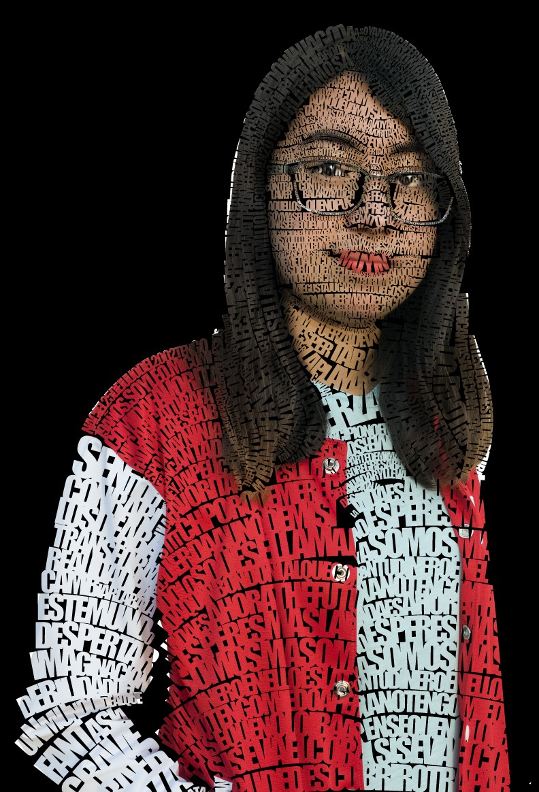

1° Trimestre
El primer trimestre que curse en la UAM fue en linea, esto complicó mucho las cosas, ya que no era el mismo proceso. Sin embargo, me gusto mucho este trimestre, aprendí muchas cosas.
2° Trimestre

Este trimestre todavia me encontraba en clases en linea. Para mi, este trimestre me fue mas complicado por la complejidad de ciertas materias, que hubiera preferido cursar en presencial.
3° Trimestre

Este trimestre lo cursamos de manera mixta, una semana asistiamos a clases presenciales y la otra semana tomabamos las clases en linea.
4° Trimestre

El primer trimestre que curse en la UAM fue en linea, esto complicó mucho las cosas, ya que no era el mismo proceso. Sin embargo, me gusto mucho este trimestre, aprendí muchas cosas.
5° Trimestre

El primer trimestre que curse en la UAM fue en linea, esto complicó mucho las cosas, ya que no era el mismo proceso. Sin embargo, me gusto mucho este trimestre, aprendí muchas cosas.
6° Trimestre

El primer trimestre que curse en la UAM fue en linea, esto complicó mucho las cosas, ya que no era el mismo proceso. Sin embargo, me gusto mucho este trimestre, aprendí muchas cosas.